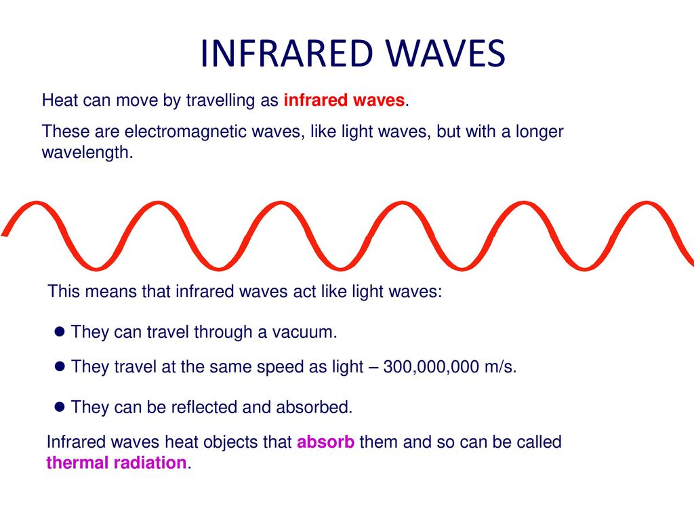

plexiglass.
We have some more information on these waves below:

Yes,it's none other than a form of heat and it acts like light because it
is near light,red light to be precise ("infra" means below so "infrared"
means "Below red"). Of course there are 7 types of light as we will see.
Intresting that it travels as fast as light!
Intrested in heat? Click here.